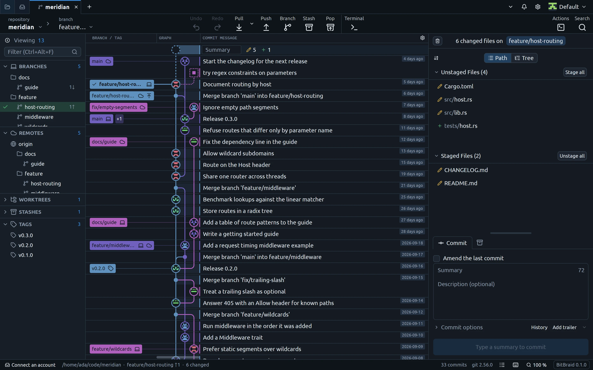

A native git client for Linux, macOS and Windows, written in Rust.

Features
-
Commit graph
Branches, tags, stashes and uncommitted changes in one graph. Drag a branch onto another to merge or rebase. Search by message, author, path or content.
-
Diffs and staging
Inline or side-by-side diffs with syntax highlighting and word-level changes. Stage files, hunks or single lines.
-
Merge, rebase, conflicts
Three-way merge tool, interactive rebase with drag to reorder, cherry-pick, revert, reset. Conflict warnings before a merge or pull.
-
Undo
Undo and redo checkouts, commits, merges, rebases, resets and branch deletions.
-
GitHub and GitLab
Pull requests (create, review, merge, stacks), issues and CI status. Tokens in the system keychain.
-
Worktrees, submodules, LFS
Hooks, sparse checkout, partial clone, GPG, SSH and X.509 signing, workspaces of many repositories.
-
Palette and terminal
Every action in a command palette, with rebindable shortcuts. A built-in terminal with git completion.
-
No telemetry
No analytics, update checks or crash reports. The network is used for fetch, pull, push, clone and connected accounts only.
Download
Linux
Wayland or X11, Vulkan, and git. An AppImage for any distribution; also .deb, .rpm and .tar.gz.
Download for LinuxmacOS
macOS 11 or later, Apple silicon or Intel. Not notarised: allow it once under System Settings, Privacy & Security.
Download for macOSWindows
Windows 10 or later. It brings its own git for a system without one; also as a .zip to run from a folder.
Download for WindowsFrom source
Rust 1.99 or later and git; the README lists what each system needs.
git clone https://github.com/BitBraid/bitbraid.git
cd bitbraid
cargo build --profile dist -p bitbraidHow it was made
BitBraid is an independent project, not affiliated with or endorsed by the maker of any other git client. Parts of its behaviour and layout are modelled on other git clients, studied only through what is publicly available: documentation, help pages, screenshots, videos, and how those programs behave in use.
No commercial program was decompiled, disassembled or otherwise reverse engineered, none of their source code was obtained, and none of their files were inspected or copied. BitBraid’s code, icons and artwork are its own or used under open licences.